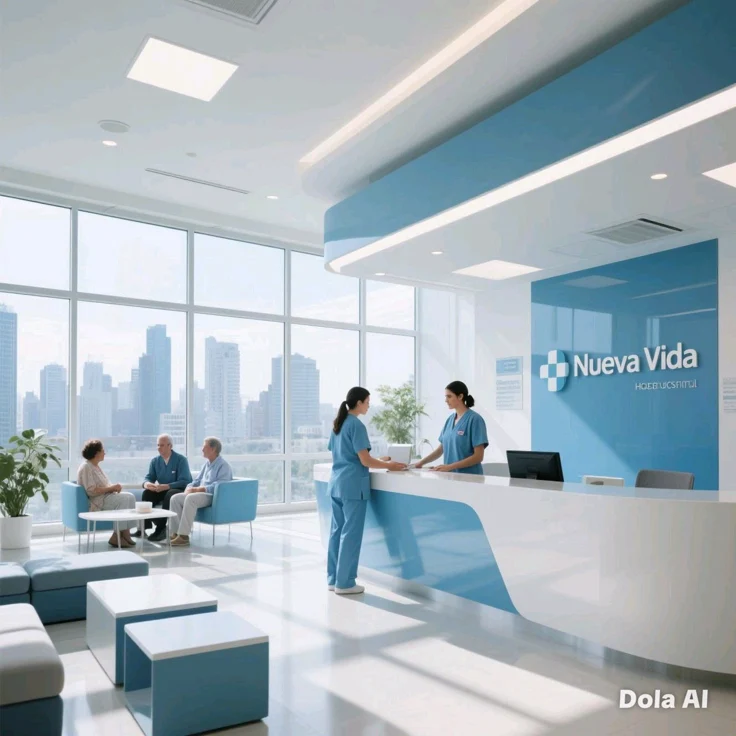
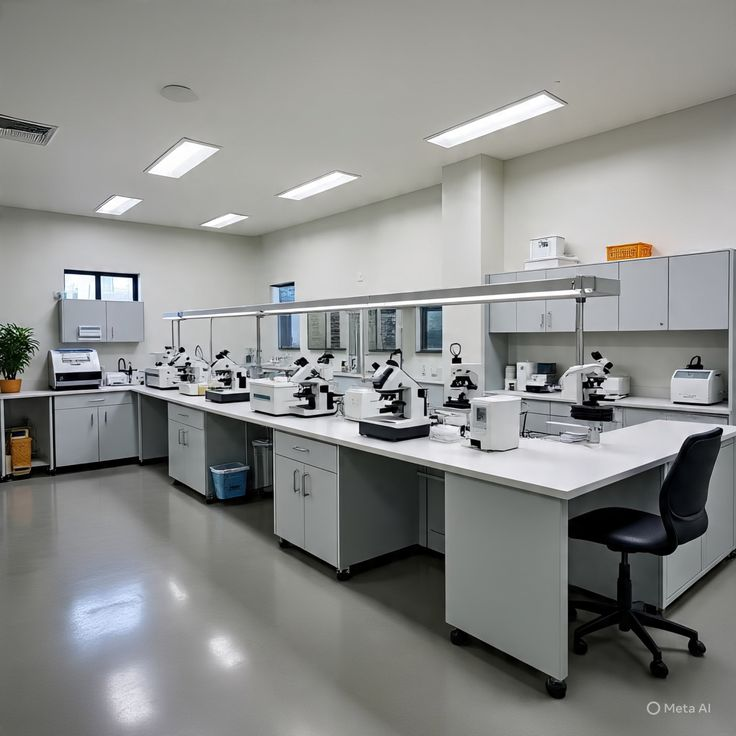
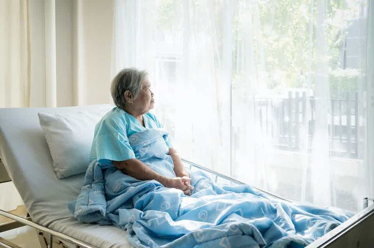
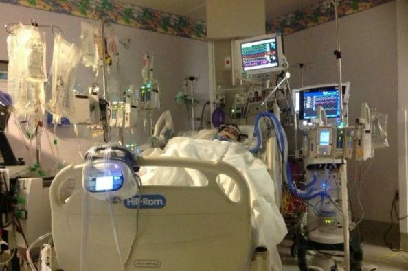

Qeybaha kala duwan ee hospitalka leeyahay

Qaybta Qaabilaadda:
Meel nadiif ah oo casri ah oo loogu talagalay
qaabilaadda iyo diiwaangelinta bukaanada.

Qolka Baaritaanka Dhakhtarka:
Qolka Baaritaanka Dhakhtarka: Qol nidaamsan
oo u diyaarsan la-tashiga iyo baaritaanka caafimaad ee guud.

Shaybaarka Isbitaalka:
Qalabka ugu dambeeyey ee tignoolajiyada ee loo isticmaalo
baaritaanka dhiigga iyo kaadida.

Qolka Nasashada Bukaanka:
Qolal iftiinkiisu fiican yahay oo loogu talagalay fadhiga
iyo nasashada bukaanka la seexiyey.

Qaybta Daryeelka Degdegga ah (ICU):
Qalabka neefsashada caawiya iyo kormeerayaasha
garaaca wadnaha ee xaaladaha degdegga ah.
Farmashiyaha Isbitaalka:
Kaydka dawooyinka ee
sida rasmiga ah u habaysan iyo adeeg bixinta dawooyinka saxda ah.